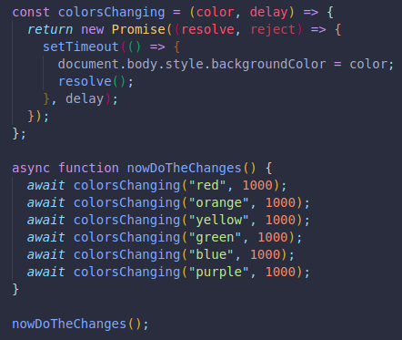
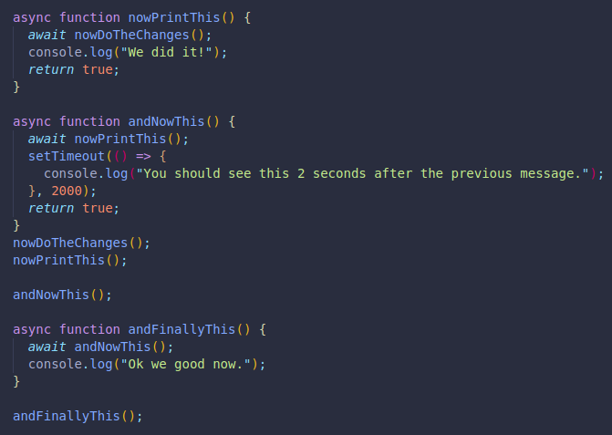
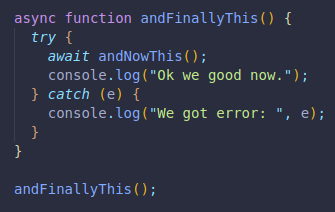

This keyword can be used inside functions we declare with the async keyword. It is where it most commonly is used.
It will pause our code until a promise is resolved.
Here we show the color changing background from before along with async and awaits together:
And here is an example of calling functions and awaiting for them to complete before the next function starts.
They all run depending on the previous functions succesful completion. Since all return a value,(true), they all continue to the next one.
We can use try and catch to respond to errors.
